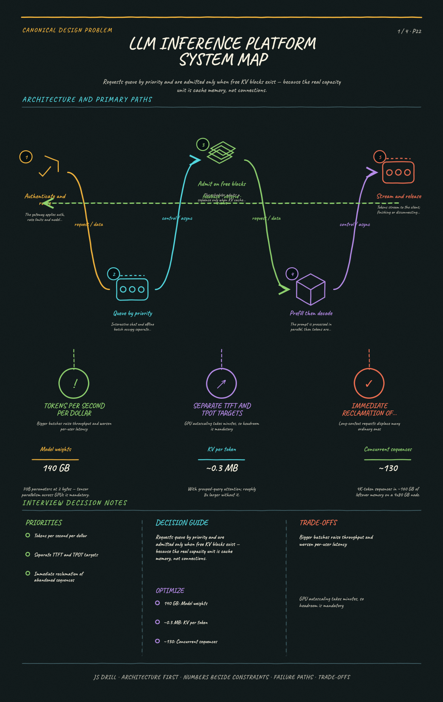

https://frosty110.github.io/js-drill/assets/system-design/infographics/design-problems/p22/architecture-overview.pngRequests queue by priority and are admitted only when free KV blocks exist — because the real capacity unit is cache memory, not connections.
Serve a large language model to many concurrent users on a scarce, expensive GPU fleet. The signature challenge is that generation is autoregressive and variable-length, so classic request-per-worker serving wastes most of the hardware you are paying for.
All questions, model answers and diagrams for Design an LLM Inference Platform →